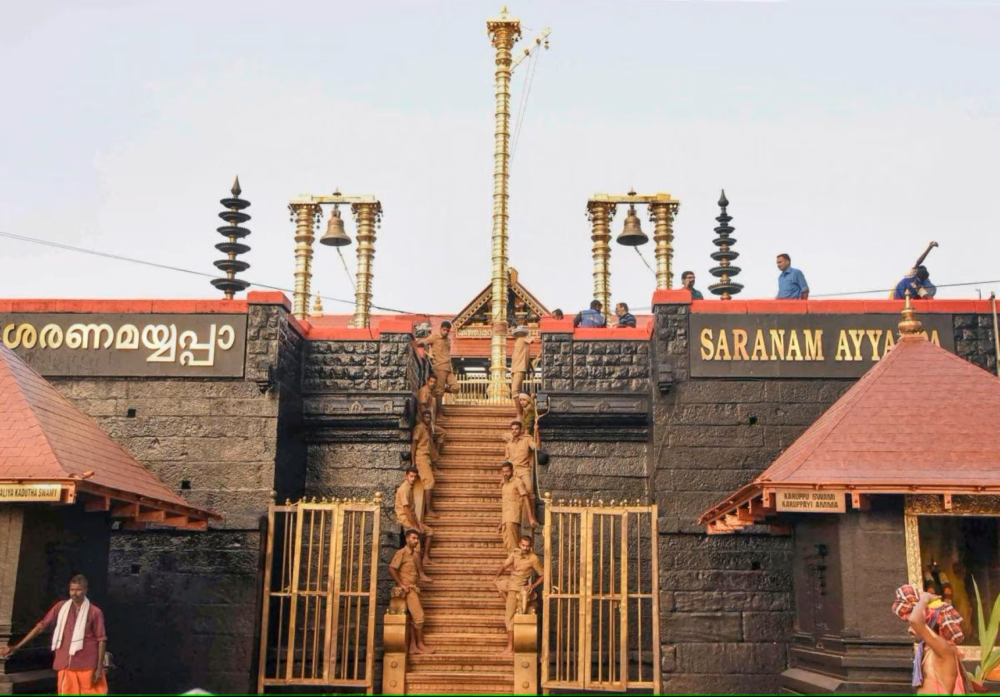
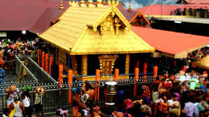
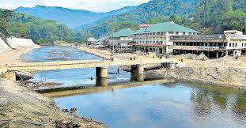

Sabarimala
- It is an town in kerala
- The lord ayyappas temle
- They beautiful place of kerala and gaut road
- The sabarimala ayyppa temple is avalible on only 3 months of time
- There the temple is monthly one time will open
- Teh avalible on temple is karthika masam
- There the temple atracts in makara jyothi on jan 14th
- The more people will come sabarimala on makara jyothi
- The start to erumeli ayyappa temple and vavaru swami masjid
- The process of sabarimala yatra is to car or bus is park the Nelicol
- To went to Nelicol to pamba is using on KSRTC buses
- on pamba you freshuo on pamba river
- To visit a pamba ganapathi temple
- And we start to walk in 7km of temple
- The two routes are steps and tractor road
- To walk the 15 shelters of steps to reach very heavy road
- and after 15 shelter are very easy route upto walk on 3km
- After to reach a temple goto ayyappa swami darshan
- We see after ayyappa swami temple and malikapurothama temple
- There allow the mobiles on darshan
- And to visit the sree mahadev temple in Nelicaul
- The prasadam of sabarimala aravana payasam


